Lesson 19 · Part 2 · Your workbench · 5 questions
One folder per task
Read first: Running agents without you
Give every task its own folder: a git worktree of each repository it touches, a short brief, and its own agent session. Tasks stop leaking into each other, you can run several at once, and cleaning up takes one command.
The idea
Picture a kitchen with one chopping board. You're halfway through the onions when someone asks for a fruit salad. You can push the onions to one side and hope, or you can take a second board. A second board costs almost nothing. A salad that tastes of onion costs a lot.
Most of us give agents one board: the clone in ~/src/payments, where we also switch branches, stash and run tests. That works for one task at a time. It breaks as soon as there are two, or when one ticket spans three repositories. The fix is a folder per task:
- One folder per ticket, such as
~/tasks/PAY-123/. - Inside it, a worktree of every repo the ticket touches, all on a branch named after the ticket. A worktree is a second working folder for a repository you already have (more below).
- A short brief,
BRIEF.md: the goal, the repos, what "done" means, what is out of scope. Context files that earn their tokens covers what goes in it. - One agent session, started in that folder. It sees the three repos and the brief, and nothing from your other work.
- When the pull requests merge, remove the worktrees and delete the folder.

You get three things. Clean context: the session holds one task, as Context management recommends. Parallel work: two folders never share files or a branch, so two agents (or you and one agent) don't collide. Easy cleanup: when the task ends, its folder goes, and nothing is left behind in your main clone.
Up close
A clone copies the whole history. A worktree only adds another set of files for a repository you already have. Every worktree of a repo shares one .git store; each has its own checkout:
| Shared by all worktrees | Separate in each |
|---|---|
| Commits and history | The files on disk |
| Branches, tags, remotes, config | HEAD (the checked-out branch) and the index (staging area) |
So a commit made in ~/tasks/PAY-123/payments is at once visible from ~/src/payments, and a new worktree is quick to make, because no history is copied. Inside a worktree, .git is a one-line file that points back to the main repository.
Four rules from the git docs:
- One branch, one worktree. By default, git refuses to check out a branch that another worktree already has. Give each task its own branch.
git worktree listshows every worktree of a repo and its branch.git worktree removedeletes the folder, but only if it is clean: no changed or untracked files. Otherwise it refuses, unless you add--force.- If you delete the folder by hand, git keeps a stale record of it.
git worktree pruneclears it; git also expires it on its own later.
cd ~/src/payments
# new branch, starting from main
git worktree add -b PAY-123 \
~/tasks/PAY-123/payments \
origin/main
git worktree list
# later; refuses if work is unsaved
git worktree remove \
~/tasks/PAY-123/paymentsWhere the session starts
Claude Code has worktrees built in, for one repo: claude -w fix-auth creates .claude/worktrees/fix-auth/ inside the repo, on a new branch worktree-fix-auth, and starts the session there. Use it for one-repo tasks. It can't span three repos, so for those you build the folder yourself and start the agent in it.
What loads, in Claude Code: a CLAUDE.md in the folder you start in loads at once. Each repo's own CLAUDE.md loads the first time the agent reads or edits a file in that repo. The alternative, starting in one repo and adding the others with --add-dir, grants file access, but by default doesn't load the added repos' CLAUDE.md or most of their .claude/ config.
Worked example
One day, four folders:
| When | Folder | What happens |
|---|---|---|
| 09:00 | PAY-123 | You and an agent add a refund field across orders, payments and contracts |
| 11:00 | INC-88 | A hotfix in payments, from fresh main. PAY-123 is untouched, mid-edit |
| 14:00 | PAY-130 | An unattended run (Running agents without you) on a small ticket |
| 17:00 | INC-88 | Merged. Worktree removed, folder gone |
At 11:00, payments has three worktrees on three branches: your clone on main, PAY-123 and INC-88. No stash, no branch switch, and nobody's half-finished edits in anyone else's tests.
At your laptop
Two small scripts. This one assumes your clones live in ~/src/. Save it as newtask on your PATH:
#!/bin/bash
# newtask PAY-123 orders payments
set -euo pipefail
id="$1"; shift
task="$HOME/tasks/$id"
mkdir -p "$task"
for repo in "$@"; do
src="$HOME/src/$repo"
git -C "$src" fetch -q origin
git -C "$src" worktree add -q \
--no-track -b "$id" \
"$task/$repo" origin/HEAD
done
cat > "$task/BRIEF.md" <<EOF
# $id
Goal:
Repos: $*
Done when:
Out of scope:
EOF
echo "@BRIEF.md" > "$task/CLAUDE.md"
echo "cd $task && claude"origin/HEADis the remote's default branch, so every task starts from fresh main, whatever your clone has checked out.--no-trackstops the new branch tracking main. Push it the first time withgit push -u origin PAY-123.- The one-line
CLAUDE.mdimports the brief, so every session in the folder starts with it, even tomorrow's.
And donetask, for when the pull requests merge. It stops at the first worktree with unsaved work:
#!/bin/bash
# donetask PAY-123
set -euo pipefail
task="$HOME/tasks/$1"
for wt in "$task"/*/; do
git -C "$wt" worktree remove .
done
rm "$task/BRIEF.md" "$task/CLAUDE.md"
rmdir "$task"Try it on a real ticket: run newtask, spend two minutes on the brief, then start the agent in the folder. A worktree is a fresh checkout, so install dependencies and copy any .env there first. The branches stay after cleanup; delete them with git branch -d once merged.
Your turn
Question 1 · ~2 min
An agent is working on PAY-123 in ~/src/payments. A production bug comes in. In another terminal, in the same folder, you run git stash, switch to a new hotfix branch, fix the bug and run the tests. Back in the agent's session, its tests now fail on code it never wrote, and its next commit lands on hotfix. Why?
Show answer
One checkout has one set of files, one current branch and one index, and you changed all three under the agent. It doesn't know you switched; it just sees different files. Your stash also took its half-done edits. Put the hotfix in its own worktree, from origin/main, and the agent's folder never changes.
Question 2 · ~2 min
Refunds over £1,000 fail. The amount is rounded in orders, checked in payments, and the event schema lives in contracts. You start the agent in ~/src/payments. It "fixes" the bug by making payments accept both rounded and unrounded amounts. Why that fix, and what setup would get a better one?
Show answer
It could only see and change payments, so it patched the symptom where it stood. The cause is upstream, in orders and the shared schema. Make a task folder with worktrees of all three repos on one branch, list them in the brief, and start the session there. Now it can trace the amount end to end and fix the rounding where it happens, with one PR per repo.
Question 3 · ~2 min
To look at main without disturbing your clone, you run git worktree add ~/tasks/look/payments main. Git refuses: main is already used by the worktree at ~/src/payments. Why does git forbid this, and what do you do instead?
Show answer
Branches are shared, but files and index are not. If two worktrees had main checked out, a commit in one would move the branch while the other's files stayed at the old commit, and its next commit would quietly undo the change. So a branch can be checked out in only one worktree at a time. Use --detach to look without a branch, or -b to start a new one from origin/main.
Question 4 · ~3 min
PAY-123 was done, so you ran rm -rf ~/tasks/PAY-123. A week later QA reopens it, and adding the worktree again fails: the path is "a missing but already registered worktree". What's going on, and did you lose anything?
Hint
Show answer
The main repository still has a record of the worktree; you only deleted its files. git worktree list marks it "prunable", and git worktree prune clears it. The branch and its commits are safe, because they live in the shared repository: add the worktree again from the existing branch (without -b, since the branch exists). Anything uncommitted in the folder is gone. That's why git worktree remove refuses to delete a folder with unsaved work.
Question 5 · ~3 min
Stretch: the payments repo commits a .claude/settings.json with a hook that runs the formatter after every edit and rules that block reading .env. In your ~/tasks/PAY-123 session, edits in payments/ come out unformatted. Why?
Hint
Show answer
Claude Code reads the shared project settings from the folder where the session starts, which is the task folder, not the repo. So the repo's hooks and permission rules don't apply there, while its CLAUDE.md still loads when the agent touches the repo. Have your script write a .claude/settings.json into the task folder with the hooks and rules you rely on, and check once that the hook fires.
Interesting fact: Eight years in contrib
In March 2007, Julian Phillips added a small script to Git's contrib/ folder of unofficial extras: git-new-workdir, based on maintainer Junio Hamano's description of how he kept several working folders for one repository. It used symbolic links into the main .git folder. The commit message quoted Junio's warning: it "risks confusion for an uninitiated if you update a ref that is checked out in another working tree". Git 2.5, announced on 27 July 2015, shipped git worktree as "a replacement for contrib/workdir/git-new-workdir that does not rely on symbolic links", one that made sharing "safer by making the borrowee and borrowers aware of each other". That awareness is why git refuses to check out one branch in two worktrees: it closes the very confusion Junio warned about. The release notes still called it experimental, with an interface "still likely to change". GitHub's blog post that week said the old script had "never made it to mainstream because it was non-portable and somewhat fiddly".
Facts checked: November 2026 (git-scm git-worktree docs; Git 2.5.0 release notes and announcement; GitHub blog, July 2015; Git commit 4f01748, March 2007; Claude Code docs: worktrees, CLI reference, memory, settings, permissions).
Answers
- Question 1
One checkout has one set of files, one current branch and one index, and you changed all three under the agent. It doesn't know you switched; it just sees different files. Your stash also took its half-done edits. Put the hotfix in its own worktree, from
origin/main, and the agent's folder never changes. - Question 2
It could only see and change payments, so it patched the symptom where it stood. The cause is upstream, in orders and the shared schema. Make a task folder with worktrees of all three repos on one branch, list them in the brief, and start the session there. Now it can trace the amount end to end and fix the rounding where it happens, with one PR per repo.
- Question 3
Branches are shared, but files and index are not. If two worktrees had
mainchecked out, a commit in one would move the branch while the other's files stayed at the old commit, and its next commit would quietly undo the change. So a branch can be checked out in only one worktree at a time. Use--detachto look without a branch, or-bto start a new one fromorigin/main. - Question 4
The main repository still has a record of the worktree; you only deleted its files.
git worktree listmarks it "prunable", andgit worktree pruneclears it. The branch and its commits are safe, because they live in the shared repository: add the worktree again from the existing branch (without-b, since the branch exists). Anything uncommitted in the folder is gone. That's whygit worktree removerefuses to delete a folder with unsaved work. - Question 5
Claude Code reads the shared project settings from the folder where the session starts, which is the task folder, not the repo. So the repo's hooks and permission rules don't apply there, while its
CLAUDE.mdstill loads when the agent touches the repo. Have your script write a.claude/settings.jsoninto the task folder with the hooks and rules you rely on, and check once that the hook fires.